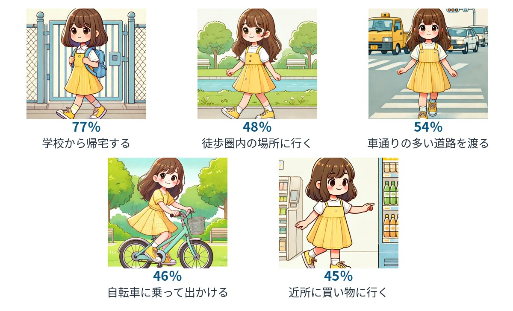
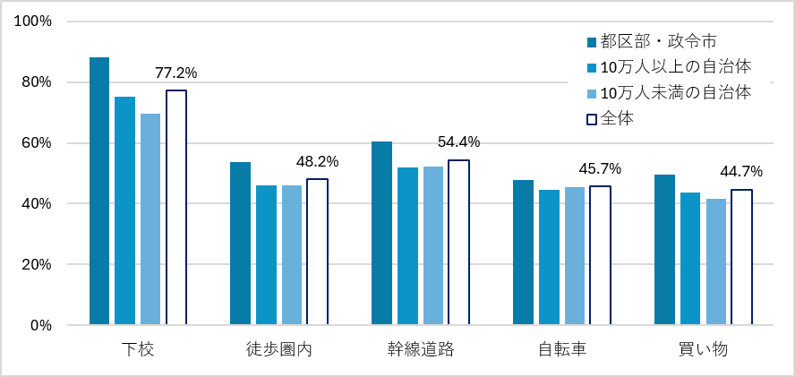

日本版移動自由性尺度の提案
子どもの「ひとりで移動できる力」をどう測るか
子どもの移動自由性とは、大人の付き添いなしに、子どもが地域の中を移動したり遊んだりできる状態を指します。移動自由性が高い子どもほど、身体活動量が多いことが知られています。国際的に見て日本の子どもの移動自由性は高いとされていますが、事故や事件への不安、学校の統廃合、放課後活動の多様化などにより、状況は変化しています。また、その変化の度合いは地域によっても異なります。ここでは、アンケートによって子どもの移動自由性の状況を把握するための方法を提案します。
なぜ移動自由性を測るのか
子どもにとって登下校や近所への外出は、単なる移動ではありません。友だちや地域の大人と出会う、地域の様子を知る、自分で判断して行動する、といった経験を通して、身体的・社会的な発達を支える日常的な機会です。こうした機会を確保するために重要なのが「移動自由性」です。もちろん、高学年になるほど移動自由性も高まりますが、学年以外にも地域や環境の要因を把握し、改善可能な点を見つけることが重要です。
保護者が許可している行動を尋ねる
国際的には、保護者が子どもに許可している行動の数を用いて、移動自由性を測る方法がよく使われてきました。しかし、この尺度は海外で開発されたものであり、現在の日本の子どもの生活実態にそのまま当てはまるとは限りません。そこで、全国の小学生の保護者6,000人に、子どもが大人の付き添いなしに次の行動をすることを許可しているかを尋ねました。分析の結果、次の5項目を用いるのが妥当だという結果が得られました（図1）。
- 学校からひとりで帰宅する
- 学校以外の徒歩圏内の場所にひとりで行く
- 車通りの多い道路をひとりで渡る
- ひとりで自転車に乗って出かける
- 近所にひとりで買い物に行く
この5項目のうち、保護者が許可している行動の数を合計することで、0〜5点のスコアを作成できます。点数が高いほど、子どもの移動自由性が高いことを意味します。

安全・安心な地域ほど移動自由性が高い
この尺度を用いた移動自由性の全国平均は2.70点でした。分析の結果、保護者が防犯面で安全と感じている地域では、子どもの移動自由性が高い傾向がありました。交通安全性については、特に中規模（10万人以上）の自治体で移動自由性との関連が見られました。つまり、子どもの自由な移動を支えるには、防犯と交通安全の両面で、保護者が安心できる環境が必要です。
また、都市規模別に見ると、都区部・政令市（平均2.99点）、人口10万人以上の自治体（2.61点）、人口10万人未満の自治体（2.55点）と、大都市ほど子どもの移動自由性が高い傾向が見られました（図2）。これは、郊外や農村部の子どもの方が自由に移動しやすいとされることの多い海外研究とは対照的です。日本では、人口密度の高い地域ほど学校区が小さく、徒歩圏内に公園などの目的地が多く、街灯や人通りも比較的多いことが背景にあると考えられます。逆に、人口密度の低い地域では、学校統廃合により通学距離が長くなるなどして、子どもがひとりで移動しにくくなっている可能性があります。

実践への示唆：自由に移動できる環境を地域で支える
自治体や学校、地域では、まず子どもがどのような行動を保護者から許可されているかを把握することが重要です。そのうえで、通学路の交通安全対策、道路や公園の見通しの改善、保護者や地域住民による見守り活動などを組み合わせて実践することが求められます。
特に人口密度の低い地域では、学校統廃合や子どもの減少により、都市部との差が広がる可能性があります。スクールバスの導入を検討する際にも、子どもが日常的に歩き、地域の中を移動したり遊んだりする機会をどう維持するかが重要です。一方、都市部では、塾や習い事など座位中心の放課後活動が多い傾向があり、移動自由性が高くても身体活動に結びつきにくい可能性に注意が必要です。
定期的に調査を行い、移動自由性の変化を捉えることで、地域の交通安全や防犯の取組を評価し、改善につなげることができます。